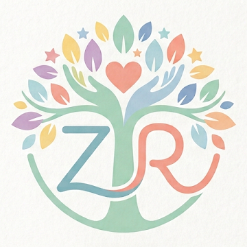

ממשק נקי ואינטואיטיבי, מאגר מטרות חכם ועיבוד אוטומטי ב-AI מטקסט חופשי
כניסה מורשית בלבד, הפרדת הרשאות, והמרה אוטומטית לראשי תיבות בהדפסה
תוצר רשמי, מובנה וייצוגי לכלל אנשי הצוות במתי"א בקובץ Word, PDF או מייל
תיק תלמיד מתמשך לאורך השנים וגלגול חכם של מטרות משנה לשנה בלחיצת כפתור
עבודה משותפת ומבוקרת של צוות הגן, מורות שילוב, מטפלים פרא-רפואיים ומדריכות
פחות שעות של עיצוב טבלאות וניסוחים טכניים – יותר זמן לעבודה חינוכית וטיפולית עם הילדים
המורה או הגננת כותבת תיאור חופשי של הילד/ה במילים שלה (גם כנקודות גולמיות). בלחיצה על "עיבוד המידע", המערכת מנתחת את הטקסט ומנסחת בעברית פדגוגית תקנית:
מאגר מובנה של מטרות ויעדים אופרטיביים המסודר לפי סביבות פעילות (מפגש, משחק במרחב, סדנא/יצירה, חצר, משחקי שולחן, התנהלות ביומיום):
שפה ארגונית ופדגוגית אחידה בכל מסגרות המתי"א – מתוכנית תחילת השנה ועד דוחות מחצית וסוף שנה
כל התוכניות במתי"א מופקות במבנה אחיד, ברור ומכבד הכולל פרטי תלמיד/ה, טבלת מוקדי כוח דו-עמודתית, וטבלאות מטרות אקולוגיות ב-6 עמודות תקניות (מטרה, יעדים, הזדמנויות ואמצעים, שותפים, משך ואמות מידה להערכה).
הפרדה מובנית בין תוכנית התל"א לבין דוח הערכת מחצית / סוף שנה:
גמישות מלאה לשיתוף עם הורים, ועדות ומסגרות חינוכיות:
תכנון מובנה לשמירה על חיסיון רפואי ופדגוגי בהדפסה, בשליחה במייל ובניהול המשתמשים
כברירת מחדל, מצב "הסתר פרטים מזהים בהדפסה" מופעל בכל הפקת מסמך (PDF, Word או מייל):
המערכת סגורה למשתמשים מורשים בלבד ומנוהלת על ידי מנהל/ת המערכת במתי"א:
רצף פדגוגי משנה לשנה ועבודה מסונכרנת של כל המעטפת המקצועית סביב התלמיד/ה
תיק התלמיד/ה אינו נמחק בסוף השנה – המערכת שומרת היסטוריה מלאה לפי שנות לימודים (תשפ"ה–תש"צ):
תוכנית אקולוגית איכותית נבנית בשיתוף פעולה בין גננת/מורה, מורת שילוב, מרפאה בעיסוק, קלינאית תקשורת ומדריכת מתי"א:
השוואה בין תהליך העבודה המסורתי לבין עבודה במערכת TALA
| תחום | עבודה מסורתית בקבצים נפרדים | מערכת TALA – תוכנית עבודה אקולוגית |
|---|---|---|
| נוחות וזמן כתיבה | שעות של הקלדה ידנית, העתק-הדבק ועיצוב טבלאות שמתפרקות | עיבוד מידע ב-AI מטקסט חופשי, מאגר מטרות דינמי והתאמה אוטומטית לבן/בת |
| פורמט וסטנדרט | חוסר אחידות בין גנים/מורים, קושי בהפרדה בין תל"א לדוח הערכה | פורמט אקולוגי אחיד וייצוגי + דוח הערכת מחצית / סוף שנה נפרד (Word / PDF) |
| אבטחת מידע ופרטיות | מחיקה ידנית של שמות ות.ז לפני שליחה – חשוף לטעויות אנוש | המרה אוטומטית לראשי תיבות והשחרת פרטים מזהים בלחיצה + הרשאות אישיות |
| מעקב רב-שנתי | חיפוש קבצים ישנים בתיקיות מחשב שונות בתחילת כל שנה | היסטוריה רב-שנתית מלאה בתיק התלמיד וגלגול חכם לשנה הבאה בלחיצה |
| שיתוף בין-צוותי | שליחת גרסאות מרובות במייל בין גננת, מורת שילוב ומטפלים | שיתוף מבוקר לפי קבוצות צוות / מתי"א ועבודה מסונכרנת על תיק התלמיד |